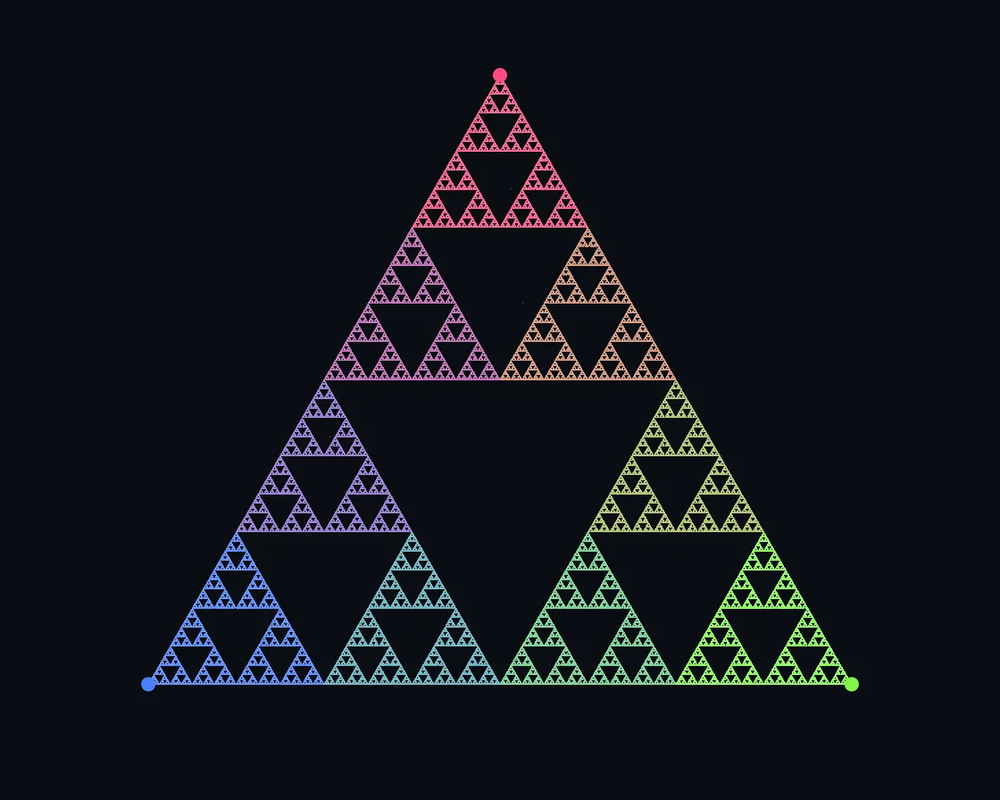

Chaos game
Chaos game is a Canvas effect: random jumps toward corners converge on the Sierpinski triangle. One plain JavaScript file with no dependencies; add it with npx motion-library add sierpinski.

Open it live, tune it and copy the code
What is Chaos game?
A point jumping halfway to random corners draws a Sierpinski triangle in nested colours. The pointer pulls the nearest corner, and the figure re-forms around it.
How does Chaos game work?
The chaos game with per-pixel hit counts and colour sums; each hit is tinted by the last two corners, the point’s address, so every sub-copy gets its hue.
How do I add Chaos game to my website?
- In your project folder, run
npx motion-library add sierpinski. It writesanimations/sierpinski.js. Needs Node 18 or newer. - Import it and call it with a container element that has a size:
import fx from './animations/sierpinski.js'; const stop = fx(document.querySelector('#hero')); - Call
stop()to clean up, for example when a component unmounts.
Every setting below is also a flag, so you can install it already tuned: npx motion-library add sierpinski --sides 9.
What settings can I tweak?
| Setting | Flag | Default | Range | Step |
|---|---|---|---|---|
| Sides | --sides | 3 | 3 to 9 | 1 |
| Jump ratio | --ratio | 0.5 | 0.2 to 0.9 | 0.01 |
| Speed | --rate | 1 | 0.2 to 5 | 0.1 |
Specifications
- Renderer
- Canvas 2D
- Category
- Generative & math
- Dependencies
- None
- File size
- 9.4 KB, unminified
- Interactive
- Yes: it responds to the pointer
- Reduced motion
- Respects prefers-reduced-motion
- Licence
- MIT-0: use it anywhere, no credit needed
Source code
// Sierpinski chaos game: put a point anywhere, pick a corner of the polygon at random, move the point `ratio` of
// the way to it, plot it, repeat. Out of pure randomness the Sierpinski triangle appears, because every jump is
// one of three half-size copies of the whole. The game starts slowly enough to follow (each jump drawn as a line
// to its corner), then speeds up to millions. Each pixel remembers which corners its hits came from, so the colour
// shows the address: the last corner picks the hue and the one before tints it, so copies nest visibly inside copies.
// Try 5 sides at 0.62 or 6 at 0.67: the ratio where the copies just touch.
// The pointer pulls the nearest corner to it and the figure re-forms round the new corners as you move.
const PARAMS = { sides: 3, ratio: 0.5, rate: 1 };
export default function (stage) {
const canvas = document.createElement('canvas');
canvas.style.cssText = 'position:absolute;inset:0;width:100%;height:100%;display:block';
stage.append(canvas);
const ctx = canvas.getContext('2d');
const reduce = matchMedia('(prefers-reduced-motion: reduce)').matches;
let W = 0, H = 0, w = 0, h = 0, d = 1, img, px, cnt, sm, touched, nt = 0, V = [], HV = [], VC = [], x = 0, y = 0, done = 0;
const trail = []; let prevK = 0;
const hsl = (hh, s, l) => { const a = s * Math.min(l, 1 - l), f = n => { const k = (n + hh * 12) % 12; return l - a * Math.max(-1, Math.min(k - 3, 9 - k, 1)); }; return [f(0) * 255, f(8) * 255, f(4) * 255]; };
// brightness from the hit count, looked up rather than worked out per hit
const VL = new Float64Array(4001), WL = new Float64Array(4001);
for (let n = 1; n <= 4000; n++) { VL[n] = 1 - Math.exp(-n / 1.2) * .7; WL[n] = Math.max(0, 1 - Math.exp(-n / 40)) * .55; }
function start() {
const n = Math.max(3, Math.round(PARAMS.sides)), R = Math.min(w, h * 1.08) * .47, cx = w / 2, cy = h / 2 + (n === 3 ? R * .2 : 0);
V = []; HV = []; VC = [];
for (let i = 0; i < n; i++) { const a = -Math.PI / 2 + i * Math.PI * 2 / n; HV.push([cx + R * Math.cos(a), cy + R * Math.sin(a)]); V.push([cx + R * Math.cos(a), cy + R * Math.sin(a)]); VC.push(hsl((.95 + i / n) % 1, .95, .64)); }
clear(true); trail.length = 0;
x = cx + (Math.random() - .5) * R * .4; y = cy + (Math.random() - .5) * R * .4;
}
// wipe the figure: every pixel, or only the ones hit since the last wipe when there are few of them
function clear(all) {
if (all || nt > w * h / 4) { cnt.fill(0); sm.fill(0); px.fill(0xff120d0a); }
else for (let i = 0; i < nt; i++) { const j = touched[i], q = j * 3; cnt[j] = 0; sm[q] = 0; sm[q + 1] = 0; sm[q + 2] = 0; px[j] = 0xff120d0a; }
nt = 0; done = 0;
}
const resize = () => {
d = Math.min(devicePixelRatio, 2); W = stage.clientWidth || 1; H = stage.clientHeight || 1;
w = canvas.width = W * d | 0; h = canvas.height = H * d | 0;
img = ctx.createImageData(w, h); px = new Uint32Array(img.data.buffer);
const N = w * h; cnt = new Uint16Array(N); sm = new Float32Array(N * 3); touched = new Int32Array(N); // sums r,g,b side by side
start(); phase = 'grow'; phaseT = 0;
if (reduce) { for (let i = 0; i < w * h * .5; i++) jump(false); phase = 'hold'; } // reduced motion: the finished figure, still
};
let phase = 'grow', phaseT = 0;
function jump(record) {
const k = Math.random() * V.length | 0, r = PARAMS.ratio;
const ox = x, oy = y; x += (V[k][0] - x) * r; y += (V[k][1] - y) * r;
if (record) { trail.push([ox, oy, x, y, k]); if (trail.length > 14) trail.shift(); }
const X = x | 0, Y = y | 0; if (X < 0 || Y < 0 || X >= w || Y >= h) { prevK = k; return; }
// colour = the last corner, tinted by the one before: the first two digits of the point’s address
const j = Y * w + X, q = j * 3, c = VC[k], p = VC[prevK]; prevK = k; let n = cnt[j];
if (n === 0) touched[nt++] = j;
if (n < 4000) { n = ++cnt[j]; sm[q] += c[0] * .64 + p[0] * .36; sm[q + 1] += c[1] * .64 + p[1] * .36; sm[q + 2] += c[2] * .64 + p[2] * .36; }
// average corner colour × a soft saturation curve on the hit count (+ a white core where hits pile up)
const f = VL[n] * (1 - WL[n]) / n, a = 255 * WL[n];
const R = sm[q] * f + a, G = sm[q + 1] * f + a, B = sm[q + 2] * f + a;
px[j] = (255 << 24) | (Math.max(16, B) << 16) | (Math.max(13, G) << 8) | Math.max(10, R);
done++;
}
// the pointer, in canvas pixels. Each corner is pulled toward it by a soft "nearest corner" weight, so the closest
// corner follows your hand and the hand-off between two corners is smooth rather than a jump
let tx = 0, ty = 0, mx = 0, my = 0, ma = 0, lastMove = -1e9;
const onMove = e => { const b = canvas.getBoundingClientRect(); tx = (e.clientX - b.left) * w / b.width; ty = (e.clientY - b.top) * h / b.height; lastMove = performance.now(); };
const onLeave = () => { lastMove = -1e9; };
canvas.addEventListener('pointermove', onMove); canvas.addEventListener('pointerdown', onMove); canvas.addEventListener('pointerleave', onLeave);
const WT = new Float64Array(16);
const ro = new ResizeObserver(resize); ro.observe(stage); resize();
let raf, last = performance.now(), acc = 0, msPer = 8e-5; // measured cost of one jump, to size the live budget
function frame(now) {
const dt = Math.min(.05, (now - last) / 1000); last = now;
const live = now - lastMove < 2500;
if (live && ma < .01) { mx = tx; my = ty; }
mx += (tx - mx) * (1 - Math.exp(-dt * 14)); my += (ty - my) * (1 - Math.exp(-dt * 14));
ma += ((live ? 1 : 0) - ma) * (1 - Math.exp(-dt * (live ? 8 : 2.5))); if (!live && ma < 1e-3) ma = 0;
let moved = 0;
if (ma > 0 || phase === 'live') {
const e = ma * ma * (3 - 2 * ma), side = Math.hypot(HV[1][0] - HV[0][0], HV[1][1] - HV[0][1]), tau = side * .05;
let sum = 0, dmin = 1e9;
for (let i = 0; i < HV.length; i++) dmin = Math.min(dmin, Math.hypot(mx - HV[i][0], my - HV[i][1]));
for (let i = 0; i < HV.length; i++) { WT[i] = Math.exp(-(Math.hypot(mx - HV[i][0], my - HV[i][1]) - dmin) / tau); sum += WT[i]; }
for (let i = 0; i < HV.length; i++) {
const f = WT[i] / sum * e, nx = HV[i][0] + (mx - HV[i][0]) * f, ny = HV[i][1] + (my - HV[i][1]) * f;
moved = Math.max(moved, Math.abs(nx - V[i][0]), Math.abs(ny - V[i][1])); V[i][0] = nx; V[i][1] = ny;
}
if (phase !== 'live') { phase = 'live'; phaseT = 0; trail.length = 0; }
}
// live budget: as many jumps as fit in about 7 ms on this machine, no more than the figure needs
const budget = Math.max(30000, Math.min(260000, w * h * .3, 7 / msPer)) * Math.min(1, PARAMS.rate) | 0;
if (phase === 'live') {
// corners moving: wipe and re-plot a fresh figure every frame; at rest: keep adding until it is dense again
const t0 = performance.now();
if (moved > .25 * d) { clear(false); for (let i = 0; i < 20; i++) jump(false); clear(false); for (let i = 0; i < budget; i++) jump(false); }
else if (done < w * h * .7) for (let i = 0; i < budget; i++) jump(false);
const spent = performance.now() - t0; if (spent > .5) msPer += (spent / budget - msPer) * .2;
else if (ma === 0) { phase = 'hold'; phaseT = 0; } // home again and dense: the idle cycle carries on
} else if (!reduce) {
phaseT += dt;
if (phase === 'grow') {
// the first second and a half: a few jumps a second, each one drawn; then exponentially more
const rate = phaseT < 1.6 ? 4 + phaseT * 10 : 30 * Math.exp((phaseT - 1.6) * 2.6);
acc += Math.min(rate * PARAMS.rate * dt, 60000);
const n = Math.floor(acc); acc -= n;
for (let i = 0; i < n; i++) jump(n < 6);
if (done > w * h * .7) { phase = 'hold'; phaseT = 0; trail.length = 0; }
} else if (phase === 'hold' && phaseT > 3) { phase = 'fade'; phaseT = 0; }
else if (phase === 'fade' && phaseT > 1) { start(); phase = 'grow'; phaseT = 0; }
}
ctx.setTransform(1, 0, 0, 1, 0, 0); ctx.putImageData(img, 0, 0);
// the game itself: corners, and the latest jumps as lines to their corner
if (phase === 'grow' && phaseT < 4) {
const a = Math.max(0, 1 - Math.max(0, phaseT - 2.5) / 1.5);
ctx.lineWidth = 1.2 * d;
trail.forEach(([x0, y0, x1, y1, k], i) => {
const c = VC[k], al = a * (i + 1) / trail.length;
ctx.strokeStyle = `rgba(${c[0] | 0},${c[1] | 0},${c[2] | 0},${al * .8})`; ctx.beginPath(); ctx.moveTo(x0, y0); ctx.lineTo(V[k][0], V[k][1]); ctx.stroke();
ctx.fillStyle = `rgba(255,255,255,${al})`; ctx.beginPath(); ctx.arc(x1, y1, 2.6 * d, 0, 7); ctx.fill();
});
}
V.forEach((v, i) => { const c = VC[i]; ctx.fillStyle = `rgb(${c[0] | 0},${c[1] | 0},${c[2] | 0})`; ctx.beginPath(); ctx.arc(v[0], v[1], 4 * d, 0, 7); ctx.fill(); });
if (ma > 0) { // a ring round the corner you are holding
let sum = 0; for (let i = 0; i < V.length; i++) sum += WT[i];
for (let i = 0; i < V.length; i++) { const g = WT[i] / sum * ma; if (g < .15) continue; const c = VC[i];
ctx.strokeStyle = `rgba(${c[0] | 0},${c[1] | 0},${c[2] | 0},${g * .7})`; ctx.lineWidth = 1.5 * d; ctx.beginPath(); ctx.arc(V[i][0], V[i][1], 10 * d, 0, 7); ctx.stroke(); }
}
if (phase === 'fade') { ctx.fillStyle = `rgba(10,13,18,${Math.min(1, phaseT)})`; ctx.fillRect(0, 0, w, h); }
raf = requestAnimationFrame(frame);
}
raf = requestAnimationFrame(frame);
return () => { cancelAnimationFrame(raf); ro.disconnect(); canvas.removeEventListener('pointermove', onMove); canvas.removeEventListener('pointerdown', onMove); canvas.removeEventListener('pointerleave', onLeave); canvas.remove(); };
}